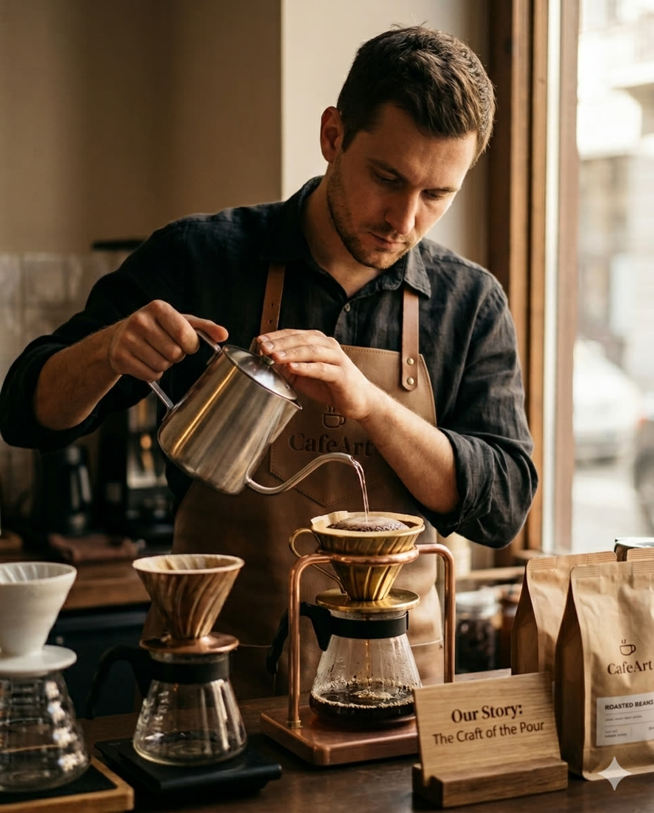
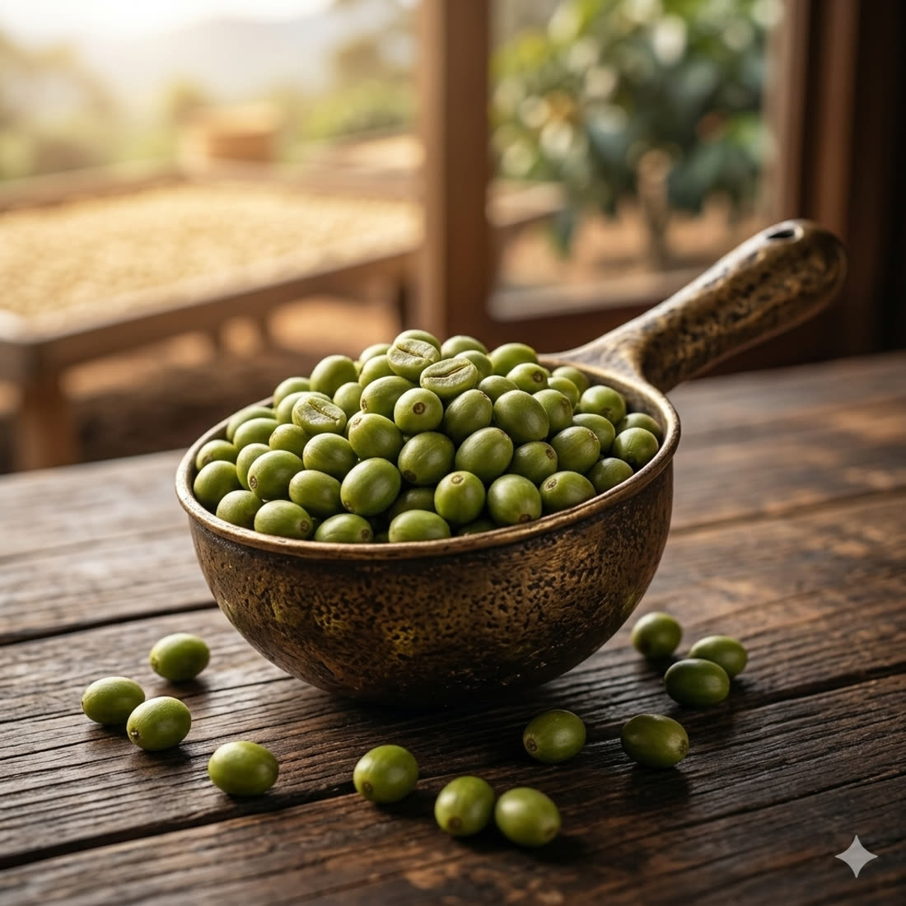
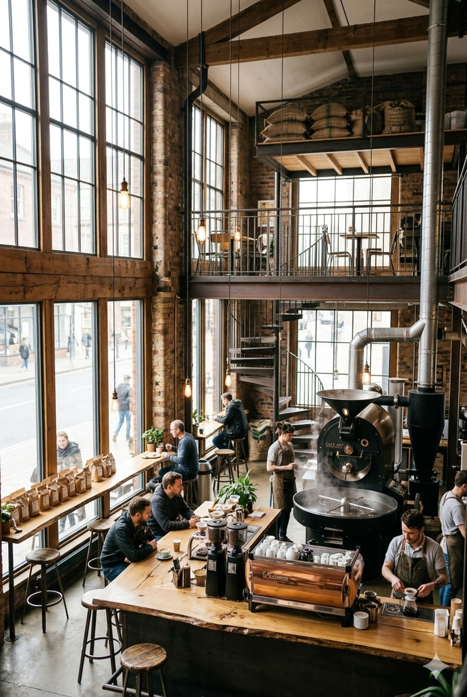
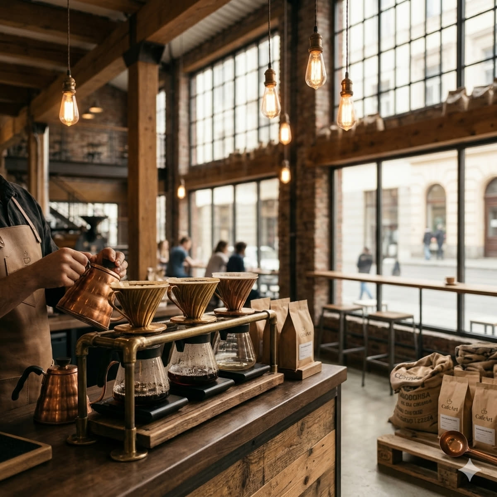
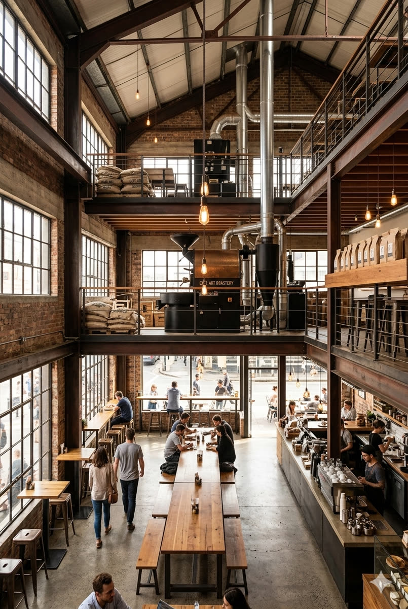
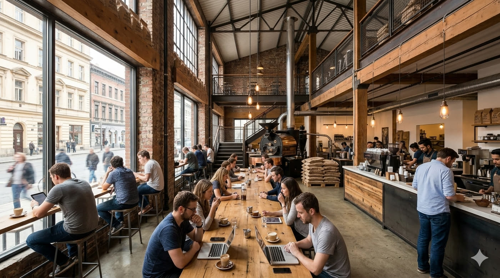
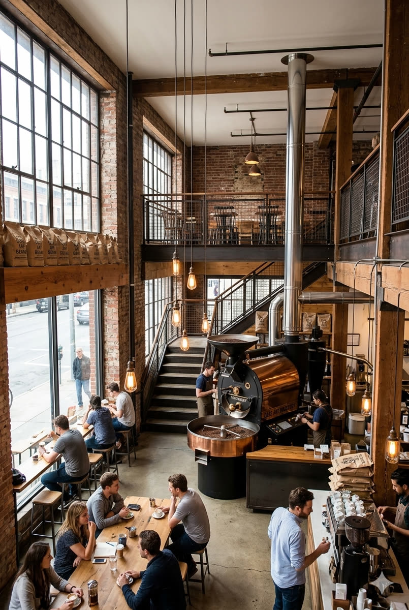

Source
We travel to origin to taste, select, and hand-pick lots from farms we trust.
✦ Artisan Roastery · Est. 2014 ✦
Slow-roasted single origins, sculpted latte art, and a space designed to make you linger. Welcome to CafeArt.


— Our Story
CafeArt began in a tiny corner roastery with a single drum roaster and an obsession: treat coffee like a craft, not a commodity. A decade later, we still source every bean directly from growers who share our love of the land.
Each batch is roasted in small lots, rested to perfection, and pulled by baristas who consider the pour an art form. The result is a cup with a signature — yours.
— The Craft
We travel to origin to taste, select, and hand-pick lots from farms we trust.
Small batches roasted on a vintage drum, profiled to unlock each bean's character.
Beans rest for days so the flavors settle, then we grind only to order.
Our baristas extract with precision and finish with art you'll hate to drink.
— The Space
Warm light, worn timber, and the gentle hum of the grinder. Step inside.





— Kind Words
"The flat white here ruined every other coffee for me. Worth every minute of the queue."
"It's not a café, it's a meditation. The light, the smell, the pour — pure art."
"I came for the latte art and stayed for three hours. Best cold brew in the city, full stop."
— Come Say Hi
Pull up a stool at the pour bar, grab a window seat, or take a bag of fresh beans home. We'd love to share a cup with you.